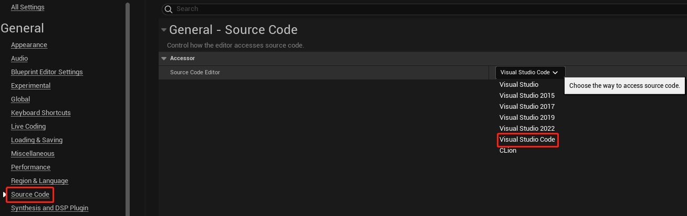
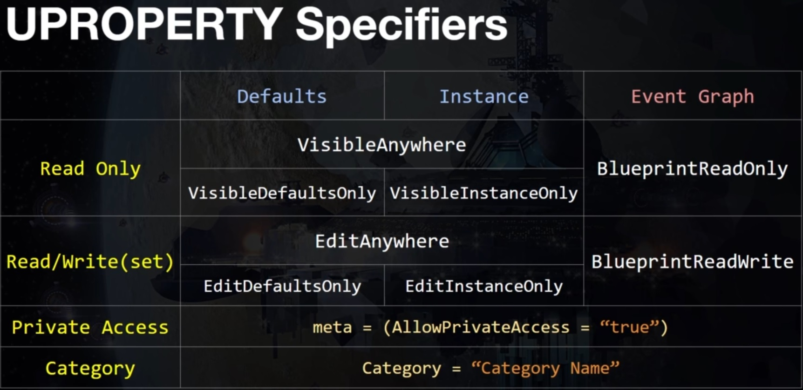

-
新建项目的时候没有项目模板
打开 Epic Games Launcher，在 虚幻引擎 -> 库 中选择需要添加组件的引擎版本，打开 选项 面板，勾选需要更改的组件

-
在 Play 模式下切换到鼠标控制
Shift + F1
-
Detaches from the player controller，通过鼠标操作场景和 Editor
F8
-
指定源码开发工具
Editor Preferences -> Source Code

-
C++ 代码编译
Editor 右下角

-
C++ Live Coding 热编译
Ctrl + Alt + F11
-
重新构建 C++ 工程
注意：需要关闭 Editor
VS Code: Ctrl + Shift + B
-
C++ 项目中使用插件
如果编译过程中提示错误 ERROR: Expecting to find a type to be declared in a module rules named ‘JsonLibrary’ in UE5Rules

在 C++ 项目根目录新建 Plugins 文件夹，并将项目中所使用到的插件目录拷贝到这里，编译器会首先使用当前工程中的插件配置
解决思路参考这里
-
UE 5 中的 Lumen 系统和以前版本材质兼容问题

打开材质编辑器，取消 Pixel Depth Offset 参数设置，Lumen 系统暂不支持该参数

-
如果对 UClass 的构造函数进行了修改，需要把 Editor 关闭，然后重新 Build 工程，因为对于构造函数的修改，通过 Live Coding 热编译并不能很好的进行传递。
-
UPROPERTY 关键字

-
目录组织：
- Content
- Assets
- Audio
- Effects
- P_XXX
- Materials
- Meshes
- Textures
- Blueprints
- Actors
- BP_XXX
- GameMode
- Pawns
- PlayerController
- Widgets
- WBP_XXX
- Actors
- Maps
- Assets
- Content
视频资料：
- 虚幻引擎5(UE5) 全套零基础入门到实战课程（基础）
- 虚幻4游戏引擎官方入门自学到提高全218集——上（B站无广告版）（官方入门）
- 【UE5】最好的UE5入门教程【中文字幕】（入门）
- 【教程】虚幻5（UE5）保姆级新手入门课程 完全版 双语字幕（字幕完结）
- 成功上岸，将自己进大厂前花3w买的虚幻引擎UE5全套教程，完整300集，现在拿出来分（已看完 蓝图）
- UE5-c++教程 01~05（已看完 C++）
- UE5_C++多人TPS完整教程(一)（高级）
- 虚幻引擎UE C++、蓝图完整开发指南 [全套最新课程]（高级）
- 【教程】虚幻5教程 斯坦福专用课程 UE4 & C++ 专业游戏开发教程 24.5小时 中文字幕（高级）